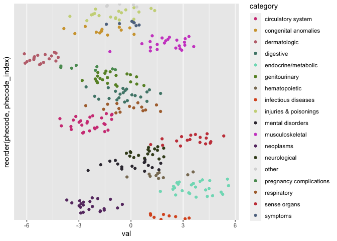

The goal of phewasHelper is to provide a set of simple lightweight helper functions for working with Phecode and Phewas data.
Installation
And the development version from GitHub with:
Usage
We will use a sample set of simulated PheWas data with phecodes to demonstrate the functions.
library(phewasHelper)
head(phewas_data)
#> # A tibble: 6 x 2
#> code val
#> <dbl> <dbl>
#> 1 323. 0.949
#> 2 250. -2.82
#> 3 362. -1.84
#> 4 721 -1.93
#> 5 363. -3.36
#> 6 527. 2.97Normalizing phecodes
Phecodes show up in about a million different formats. In our demo data the phecodes have been converted to a numeric value. This would be an issue if we tried to harmonize with data that stored the phecodes in a string. The function normalize_phecodes is designed to fix this problem. It takes any phecode array and coerces it to a standard zero-padded string.
phewas_data %>%
mutate(fixed_code = normalize_phecode(code)) %>%
head()
#> # A tibble: 6 x 3
#> code val fixed_code
#> <dbl> <dbl> <chr>
#> 1 323. 0.949 323.20
#> 2 250. -2.82 250.11
#> 3 362. -1.84 362.20
#> 4 721 -1.93 721.00
#> 5 363. -3.36 363.40
#> 6 527. 2.97 527.20
# Update our original data with normalized phecodes
phewas_data <- phewas_data %>%
mutate(code = normalize_phecode(code))Getting phecode information
Another issue that is commonly encountered in PheWas results is wanting to know what exactly a code is. The functions get_phecode_info() and join_phecode_info() help with that.
get_phecode_info() is the simpler of the two. It takes as input an array of phecodes and returns an array of the desired information, either description or category. This is useful for adding individual columns to a dataframe.
phewas_data %>%
mutate(descript = get_phecode_info(code, 'description'),
category = get_phecode_info(code, 'category')) %>%
head()
#> # A tibble: 6 x 4
#> code val descript category
#> <chr> <dbl> <chr> <chr>
#> 1 323.20 0.949 Acute (transverse) myelitis neurological
#> 2 250.11 -2.82 Type 1 diabetes with ketoacidosis endocrine/metabo…
#> 3 362.20 -1.84 Degeneration of macula and posterior pole of … sense organs
#> 4 721.00 -1.93 Spondylosis and allied disorders musculoskeletal
#> 5 363.40 -3.36 Choroidal degenerations sense organs
#> 6 527.20 2.97 Sialoadenitis digestiveFor more a more complete labeling of phecode information the function join_phecode_info() modifies a passsed dataframe by appending description, category, and category number columns.
phewas_data <- phewas_data %>%
join_phecode_info(phecode_column = 'code')
head(phewas_data)
#> # A tibble: 6 x 5
#> phecode val description category category_number
#> <chr> <dbl> <chr> <chr> <int>
#> 1 323.20 0.949 Acute (transverse) myelitis neurological 6
#> 2 250.11 -2.82 Type 1 diabetes with ketoacidosis endocrine/me… 3
#> 3 362.20 -1.84 Degeneration of macula and poste… sense organs 7
#> 4 721.00 -1.93 Spondylosis and allied disorders musculoskele… 14
#> 5 363.40 -3.36 Choroidal degenerations sense organs 7
#> 6 527.20 2.97 Sialoadenitis digestive 10Coloring PheWas plots
Manhattan plots are commonly made of phewas results. Frequently the colors of the plots points are encoded by the categories. The default color palletes in ggplot2 and base-plot are not great and custom palletes like R color-brewer don’t give you enough colors to work with all the categories. To deal with this category_colors() returns a mapping of phecode category to colors that can be used easily in your plots.
library(ggplot2)
phewas_data %>%
ggplot(aes(x = phecode, y = val, color = category)) +
geom_point() +
scale_color_manual(values = category_colors()) +
theme(axis.ticks.x = element_blank(),
axis.text.x = element_blank(),
panel.grid.major.x = element_blank(),
panel.grid.minor.x = element_blank())
If just the color pallete is needed for ggplot then the function scale_color_phecode() makes this even easier.
phewas_data %>%
ggplot(aes(x = phecode, y = val, color = category)) +
geom_point() +
scale_color_phecode() +
theme(axis.ticks.x = element_blank(),
axis.text.x = element_blank(),
panel.grid.major.x = element_blank(),
panel.grid.minor.x = element_blank())